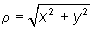

|
Fresnel Diffraction - Circular Aperture: Theory Introduction In this module a monochromatic plane wave of light of intensity I0 and wavelength l is normally incident upon a plane that contains a circular aperture of diameter D. The resulting intensity pattern is displayed on an observation screen that is a distance z from the aperture plane (see Fig. 1 below).
Intensity on the Observation Screen Let the center of the aperture be the origin of our coordinate system, and the plane that contains the aperture be the plane z = 0. The observation screen is a distance z from the plane that contains the slit. The intensity at the point P = (x,y,z) on the observation screen is given by different formulas, depending on the position P. In the following, the off-axis distance  is important, as is the radius of the aperture, R = D/2. The four different cases are as follows: (a) P on the z- axis (r = 0). The intensity at P is given by the expression where NF is the Fresnel number for the observation plane in question, (b) P Off-axis and in the Lit Region (r < R ). Let u = 2pNF and v = 2pNr/R. The intensity at P is given by the expression where V0(u,v) and V1(u,v) are Lommel functions of two variables. (c) P on the Shadow Boundary (r = R) The intensity at P is given by the expression (d) P in the Shadow Region (r > R) The intensity at P is given by the expression where U1(u,v) and U2(u,v) are Lommel functions of two variables. WebTOP calculates the intensity on the observation screen in units of I0 using Eqs. (1) - (5). To see the effect of changing the diameter of the aperture, D, on the observed intensity pattern, see Example 1. To see the effect of changing the wavelength of the light, l, see Example 2. To see the effect of changing z, the distance to the observation screen, see Example 3. Fresnel Number It follows directly from Eq. (1) that for on-axis observation points, the intensity is zero if the Fresnel number is even and equal to four times the incident intensity if the Fresnel number is odd.Also, starting at one side of the intensity pattern and proceeding across the other side, the number of major maxima seen is equal to the Fresnel number. When the Fresnel number is much less than 1, say 0.1 or less, the observation point in question is said to be in the Fraunhofer region. When the Fresnel number is greater than or equal to 1, the observation point in question is said to be in the Fresnel region. |